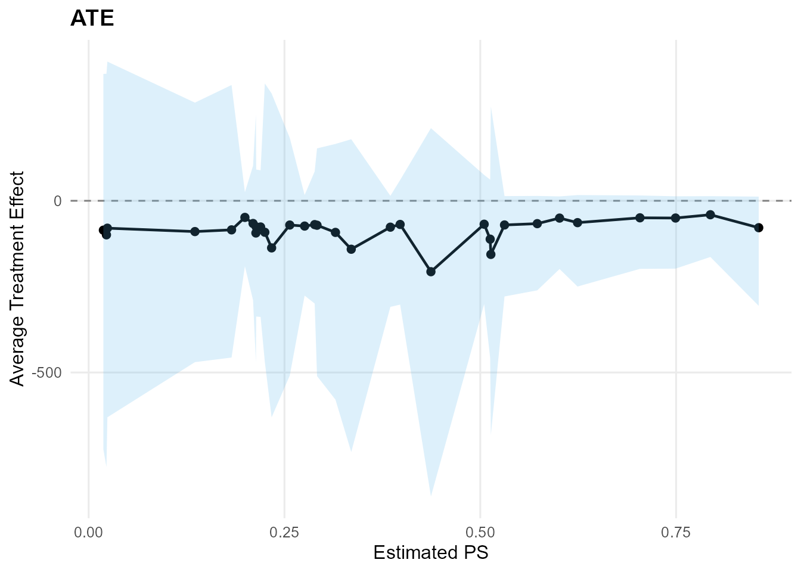
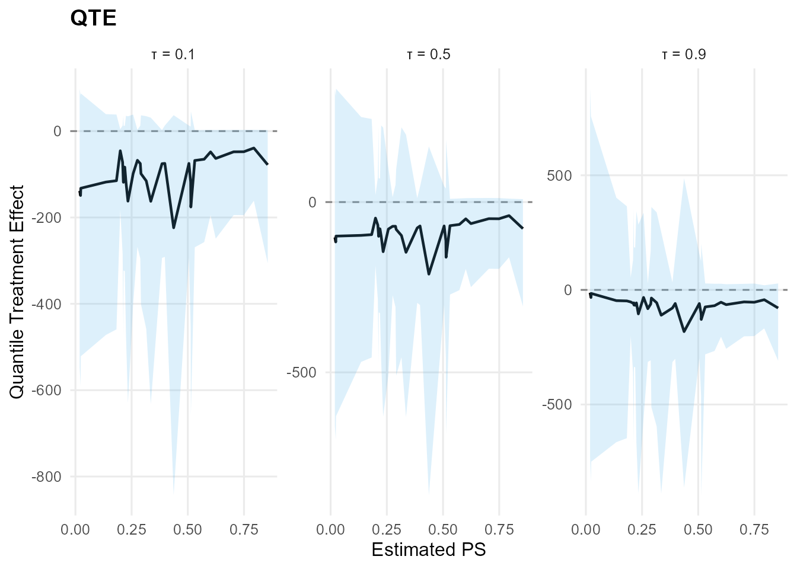

Theory (brief)
S3 methods provide a consistent interface for posterior summaries and diagnostics on fitted objects. They expose predictions, fitted values, and standard MCMC visualizations while keeping the underlying model specification unchanged.
Model Fitting
library(DPmixGPD)
data("faithful", package = "datasets")
y <- faithful$eruptions
bundle <- build_nimble_bundle(
y = y,
backend = "sb",
kernel = "normal",
GPD = TRUE,
components = 6,
mcmc = mcmc
)
fit <- run_mcmc_bundle_manual(bundle, show_progress = FALSE)print()
print(fit)
#> MixGPD fit | backend: Stick-Breaking Process | kernel: Normal Distribution | GPD tail: TRUE
#> n = 272 | components = 6 | epsilon = 0.025
#> MCMC: niter=300, nburnin=80, thin=2, nchains=1
#> Fit
#> Use summary() for posterior summaries; plot() for diagnostics; predict() for predictions.summary()
summary(fit)
#> MixGPD summary | backend: Stick-Breaking Process | kernel: Normal Distribution | GPD tail: TRUE | epsilon: 0.025
#> n = 272 | components = 6
#> Summary
#> Initial components: 6 | Components after truncation: 4
#>
#> WAIC: 739.412
#> lppd: -363.693 | pWAIC: 6.013
#>
#> Summary table
#> parameter mean sd q0.025 q0.500 q0.975 ess
#> weights[1] 0.421 0.095 0.304 0.379 0.619 2.803
#> weights[2] 0.259 0.052 0.162 0.265 0.342 5.189
#> weights[3] 0.188 0.048 0.106 0.202 0.263 2.73
#> weights[4] 0.099 0.03 0.044 0.099 0.154 8.607
#> alpha 1.285 0.676 0.343 1.278 2.92 15.874
#> tail_scale 2.526 0.095 2.348 2.496 2.683 2.87
#> tail_shape -0.705 0.045 -0.75 -0.714 -0.618 1.776
#> threshold 1.678 0.024 1.664 1.664 1.727 3.888
#> mean[1] 7.173 3.027 3.26 6.552 12.93 21.739
#> mean[2] 7.146 2.643 3.605 6.608 12.352 112.35
#> mean[3] 5.792 2.105 2.497 5.571 10.365 19.338
#> mean[4] 8.599 3.396 2.655 8.457 15.258 12.648
#> sd[1] 1.551 1.002 0.2 1.314 3.765 15.609
#> sd[2] 1.411 0.819 0.362 1.229 3.558 19.133
#> sd[3] 1.257 0.736 0.217 1.172 3.168 23.754
#> sd[4] 1.354 0.789 0.251 1.248 3.111 39.807predict()
predict(fit, type = "mean", cred.level = 0.90, interval = "credible")$fit
#> estimate lower upper
#> 1 3.17 3.04 3.3
predict(fit, type = "median", cred.level = 0.90, interval = "credible")$fit
#> estimate index lower upper
#> 1 3.05 0.5 2.99 3.13
predict(fit, type = "quantile", index = 0.90, cred.level = 0.90, interval = "hpd")$fit
#> estimate index lower upper
#> 1 4.55 0.9 4.44 4.65
predict(fit, type = "quantile", index = 0.90, interval = NULL)$fit
#> estimate index lower upper
#> 1 4.55 0.9 NA NAObject Structure
str(fit, max.level = 2)
#> List of 14
#> $ call : language run_mcmc_bundle_manual(bundle = bundle, show_progress = FALSE)
#> $ spec :List of 4
#> ..$ meta :List of 9
#> ..$ kernel_info:List of 9
#> ..$ signatures :List of 2
#> ..$ plan :List of 11
#> ..- attr(*, "class")= chr [1:2] "dpmixgpd_spec" "list"
#> $ data :List of 1
#> ..$ y: num [1:272] 3.6 1.8 3.33 2.28 4.53 ...
#> $ model :Reference class 'Ccode_MID_1' [package ".GlobalEnv"] with 67 fields
#> ..and 88 methods, of which 74 are possibly relevant:
#> .. calculate, calculateDiff, check, checkBasics, checkConjugacy,
#> .. copyFromModel, expandNodeNames, expandNodeNamesFromGraphIDs, finalize,
#> .. finalizeInternal, getBound, getBuildDerivs, getCode,
#> .. getConditionallyIndependentSets, getConstants, getDeclID, getDeclInfo,
#> .. getDependencies, getDependenciesList, getDependencyPathCountOneNode,
#> .. getDependencyPaths, getDimension, getDistribution, getDownstream,
#> .. getGraph, getLogProb, getMacroInits, getMacroParameters, getMaps,
#> .. getModelDef, getNodeFunctions, getNodeNames, getNodeType, getParam,
#> .. getParamExpr, getParents, getParentsList, getPredictiveNodeIDs,
#> .. getPredictiveRootNodeIDs, getSymbolTable, getUnrolledIndicesList,
#> .. getValueExpr, getVarInfo, getVarNames, init_isDataEnv, initialize,
#> .. initializeInfo, isBinary, isData, isDataFromGraphID, isDeterm,
#> .. isDiscrete, isEndNode, isMultivariate, isStoch, isTruncated,
#> .. isUnivariate, newModel, plot, plotGraph, resetData,
#> .. safeUpdateValidValues, setData, setGraph, setInits, setModel,
#> .. setModelDef, setPredictiveNodeIDs, setupNodes, show#CmodelBaseClass,
#> .. show#envRefClass, simulate, testDataFlags, topologicallySortNodes
#> $ mcmc_conf :Reference class 'MCMCconf' [package "nimble"] with 16 fields
#> ..and 59 methods, of which 45 are possibly relevant:
#> .. addConjugateSampler, addDefaultSampler, addDerivedQuantity, addMonitors,
#> .. addMonitors2, addOneDerivedQuantity, addOneSampler, addSampler,
#> .. filterOutDataNodes, findSamplersOnNodes, getDerivedQuantities,
#> .. getDerivedQuantityDefinition, getMonitors, getMonitors2,
#> .. getMvSamplesConf, getSamplerDefinition, getSamplerExecutionOrder,
#> .. getSamplers, getUnsampledNodes, initialize, isMvSamplesReady,
#> .. makeMvSamplesConf, printComments, printDerivedQuantities,
#> .. printDerivedQuantitiesByType, printMonitors, printSamplers,
#> .. printSamplersByType, removeDerivedQuantities, removeDerivedQuantity,
#> .. removeSampler, removeSamplers, replaceSampler, replaceSamplers,
#> .. resetMonitors, setMonitors, setMonitors2, setSampler,
#> .. setSamplerExecutionOrder, setSamplers, setThin, setThin2,
#> .. setUnsampledNodes, show#envRefClass, warnUnsampledNodes
#> $ mcmc :List of 8
#> ..$ engine : chr "compiled"
#> ..$ niter : int 300
#> ..$ nburnin: int 80
#> ..$ thin : int 2
#> ..$ nchains: int 1
#> ..$ seed : int 1
#> ..$ samples: 'mcmc' num [1:110, 1:294] 1.21 1.15 1.44 1.52 1.52 ...
#> .. ..- attr(*, "dimnames")=List of 2
#> .. ..- attr(*, "mcpar")= num [1:3] 1 110 1
#> ..$ waic :Reference class 'waicNimbleList' [package "nimble"] with 7 fields
#> .. ..and 17 methods, of which 3 are possibly relevant
#> $ code : language { alpha ~ dgamma(1, 1) ...
#> $ constants :List of 3
#> ..$ N : int 272
#> ..$ P : int 0
#> ..$ components: int 6
#> $ dimensions:List of 5
#> ..$ v : int 5
#> ..$ w : int 6
#> ..$ z : int 272
#> ..$ mean: int 6
#> ..$ sd : int 6
#> $ monitors : chr [1:8] "alpha" "w[1:6]" "z[1:272]" "mean[1:6]" ...
#> $ cache : list()
#> $ epsilon : num 0.025
#> $ samples : 'mcmc' num [1:110, 1:294] 1.21 1.15 1.44 1.52 1.52 ...
#> ..- attr(*, "dimnames")=List of 2
#> ..- attr(*, "mcpar")= num [1:3] 1 110 1
#> $ waic :Reference class 'waicNimbleList' [package "nimble"] with 7 fields
#> ..and 17 methods, of which 3 are possibly relevant:
#> .. initialize, initialize#nimbleListBase, show#envRefClass
#> - attr(*, "class")= chr [1:2] "mixgpd_fit" "list"Causal S3 Methods
The ate() and qte() functions return
objects with their own S3 methods.
Causal Model Fitting
data("mtcars", package = "datasets")
df <- mtcars
X <- df[, c("wt", "hp", "qsec", "cyl")]
X <- as.data.frame(X)
T_ind <- df$am
y <- df$mpg
causal_bundle <- build_causal_bundle(
y = y,
X = X,
T = T_ind,
backend = "sb",
kernel = "normal",
GPD = TRUE,
components = 6,
PS = "logit",
design = "observational",
mcmc_outcome = mcmc,
mcmc_ps = mcmc
)
causal_fit <- run_mcmc_causal(causal_bundle, show_progress = FALSE)ATE S3 Methods
ate_result <- ate(causal_fit, interval = "hpd", nsim_mean = 50)
print(ate_result)
#> ATE (Average Treatment Effect)
#> Prediction points: 32
#> Conditional (covariates): YES
#> Propensity score used: YES
#> PS scale: logit
#> Posterior mean draws: 50
#> Credible interval: hpd
#>
#> ATE estimates (treated - control):
#> id estimate lower upper
#> 1 -68.244 -300.799 75.211
#> 2 -68.875 -302.388 60.352
#> 3 -66.586 -260.851 14.145
#> 4 -69.374 -299.253 85.439
#> 5 -92.065 -579.136 165.576
#> 6 -66.117 -289.57 102.075
#> ... (26 more rows)
summary(ate_result)
#> ATE Summary
#> ==================================================
#> Prediction points: 32
#> Conditional: YES | PS used: YES
#> Posterior mean draws: 50
#> Interval: hpd
#>
#> Model specification:
#> Backend (trt/con): sb / sb
#> Kernel (trt/con): normal / normal
#> GPD tail (trt/con): YES / YES
#>
#> ATE statistics:
#> Mean: -84.519 | Median: -76.146
#> Range: [-206.516, -40.642]
#> SD: 34.424
#>
#> Credible interval width:
#> Mean: 563.362 | Median: 427.586
#> Range: [177.145, 1145.375]
ate_plots <- plot(ate_result)
ate_plots$treatment_effect
plot(ate_result, type = "effect")
QTE S3 Methods
qte_result <- qte(causal_fit, probs = c(0.1, 0.5, 0.9), interval = "hpd")
print(qte_result)
#> QTE (Quantile Treatment Effect)
#> Prediction points: 32
#> Quantile grid: 0.1, 0.5, 0.9
#> Conditional (covariates): YES
#> Propensity score used: YES
#> PS scale: logit
#> Credible interval: hpd
#>
#> QTE estimates (treated - control):
#> index id estimate lower upper
#> 0.1 1 -74.819 -292.18 12.888
#> 0.1 2 -74.829 -291.32 12.892
#> 0.1 3 -65.117 -257.106 2.552
#> 0.1 4 -75.26 -295.072 12.66
#> 0.1 5 -115.349 -458.356 34.528
#> 0.1 6 -72.053 -283.789 12.802
#> ... (90 more rows)
summary(qte_result)
#> QTE Summary
#> ==================================================
#> Prediction points: 32 | Quantiles: 3
#> Quantile grid: 0.1, 0.5, 0.9
#> Conditional: YES | PS used: YES
#> Interval: hpd
#>
#> Model specification:
#> Backend (trt/con): sb / sb
#> Kernel (trt/con): normal / normal
#> GPD tail (trt/con): YES / YES
#>
#> QTE by quantile:
#> quantile mean_qte median_qte min_qte max_qte sd_qte
#> 0.1 -98.577 -83.433 -223.833 -39.188 43.712
#> 0.5 -88.933 -78.316 -211.551 -39.763 36.917
#> 0.9 -65.601 -58.742 -181.964 -12.153 33.054
#>
#> Credible interval width:
#> Mean: 548.261 | Median: 451.115
#> Range: [164.373, 1604.476]
qte_plots <- plot(qte_result)
qte_plots$treatment_effect
plot(qte_result, type = "effect")